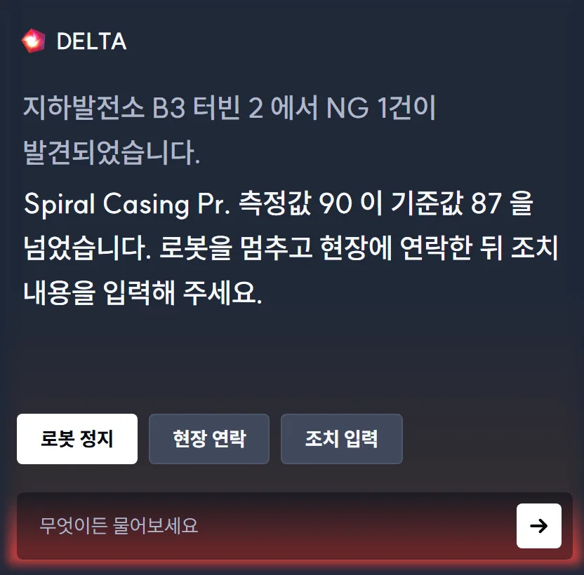
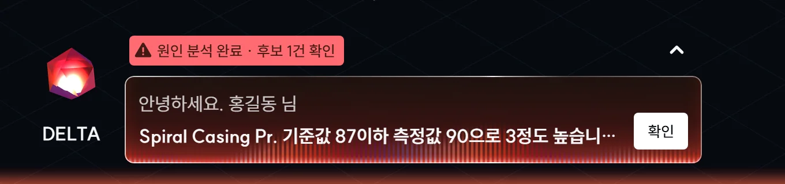
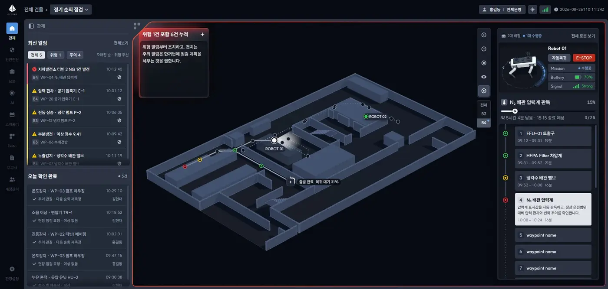
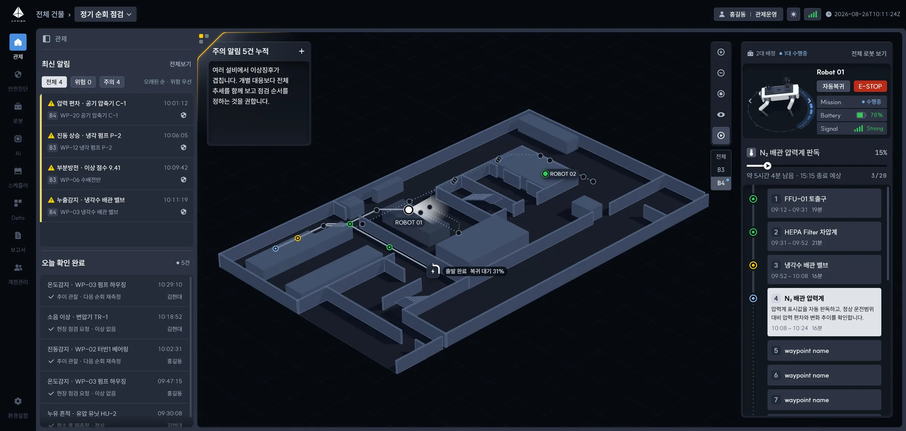
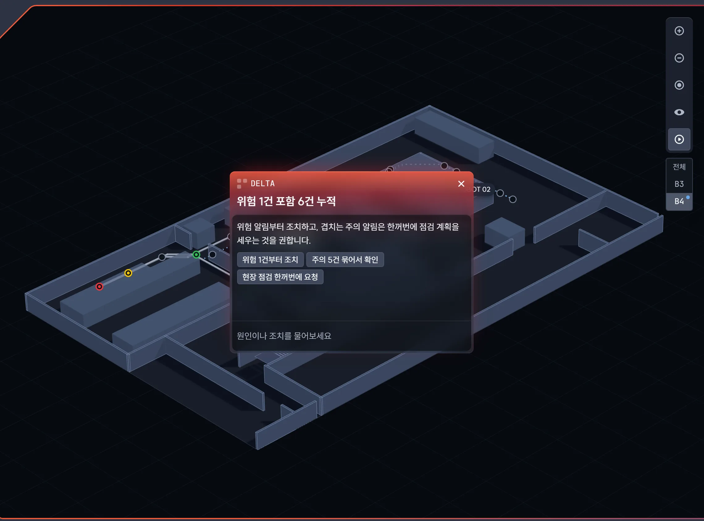
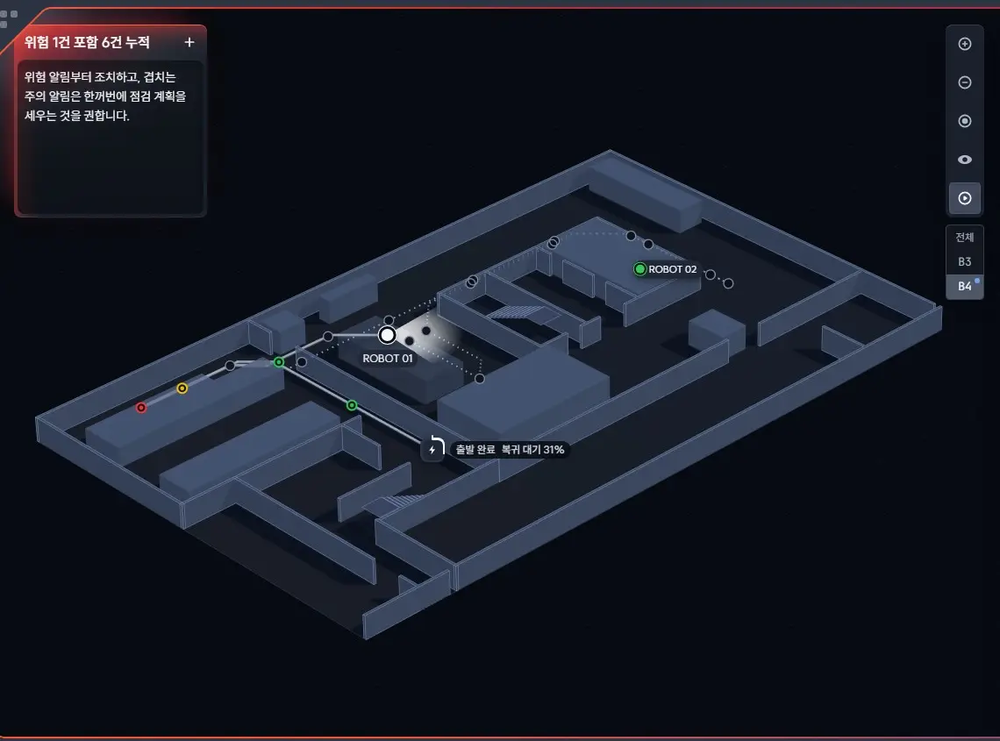

03
Delta 경고의 강약
시안 1-A · 1-B
1-A는 고른 알림 하나를 큰 글씨로 해설하고 행동 버튼 셋 · 입력창이 늘 열려 패널 절반을 차지함(1-B는 지도 아래 띠 하나). 경고는 위험 · 주의 모두 지도 네 변 테라 세기가 같아 늘 경보 상태처럼 보임.
v2.2
Delta는 전체 알림을 종합해 판단함("위험 1건 포함 6건 누적"). 지도 왼쪽 위 작은 창에서 접힘 · 펼침 · 대화를 오가고, 답 아래 칩으로 지도 · 목록과 이어짐. 위험은 네 변 빛과 Delta 판의 빛이 맥박치고, 주의는 Delta 모서리에만 노란 빛이 머묾. 경고 색은 하나(가장 높은 단계), 표식은 위험 ⓧ · 주의 △.
알림마다 반복되던 해설은 목록과 겹침 — AI는 여러 건을 묶어 볼 때 쓸모가 있음. 주의가 잦은 현장에서 늘 켜진 경보는 무뎌지므로 위험만 확실히 튀게 함.






